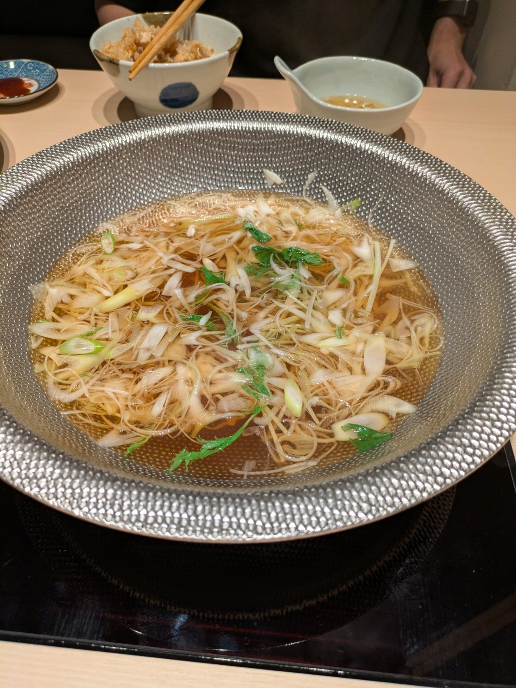
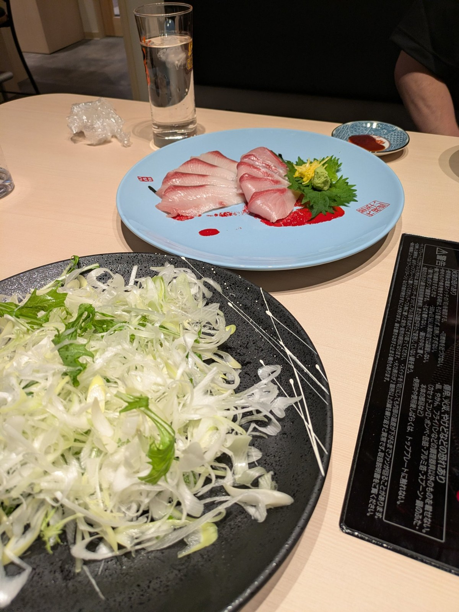
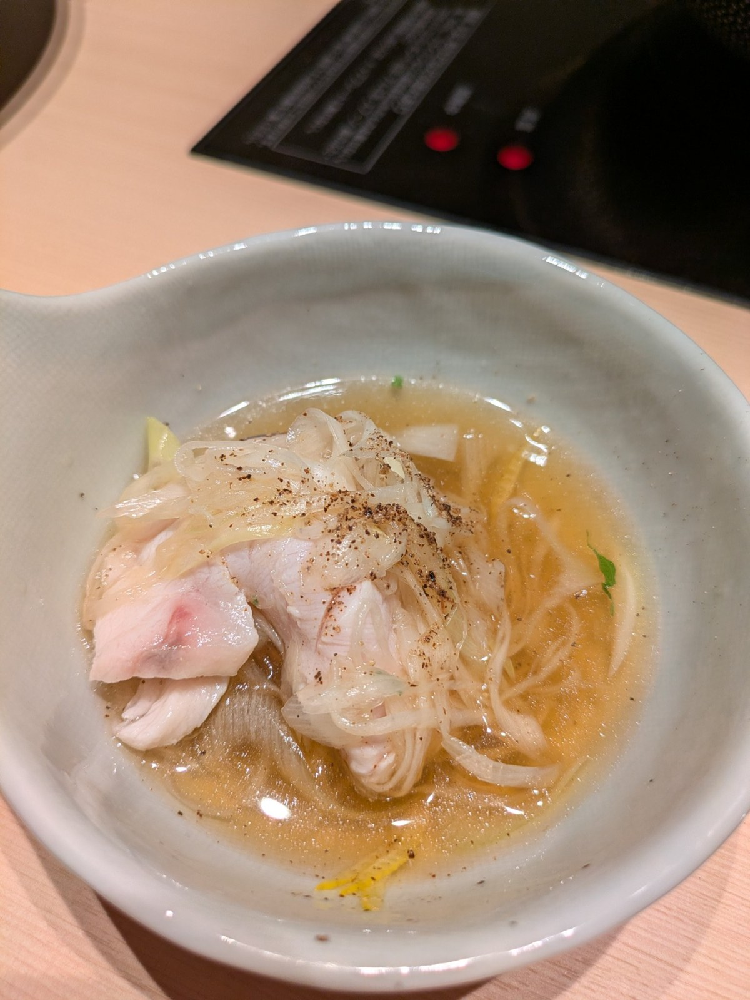

本日の試食！北海道初上陸、宇和島の鰤しゃぶ
今日の試食は、お店の看板メニュー「鰤しゃぶ」です。食べ方をご紹介します。

鰤しゃぶの食べ方
- お出汁を温め、まずは出汁の味を楽しみます。
- 出汁をグツグツ煮立てないように、電磁調理器の温度を調整しながら、長ネギを半分ほど鍋に入れます。
- 次に、お刺身として。甘口醤油、辛口醤油で、鰤を刺身で楽しみます。
- お待ちかねの鰤しゃぶ。鰤の片面をお出汁につけ、ネギの布団の上にひっくり返して乗せ、ネギの布団と鰤をとんすいに取り出します。
- まずはそのまま、ネギの布団を鰤で包んでお口の中へ。いち、にと噛んだら、お出汁をお口の中へ。鰤・ネギの布団・お出汁を、口の中で合わせて頂きます。

味変もお好みで。薬味の柚子の千切り、柚子胡椒、ブラックペッパーをお試しください。当店のおすすめは、ブラックペッパーです‼️

ネギとお出汁だけでも美味しく頂けますが、もしもう少し食べたい場合は、追加のお出汁、鰤、きしめんもご用意しております。
食べ方が初めてでよく分からないときや、お聞きになりたいことがありましたら、近くのスタッフにお声がけください‼️
← トップページへ戻る